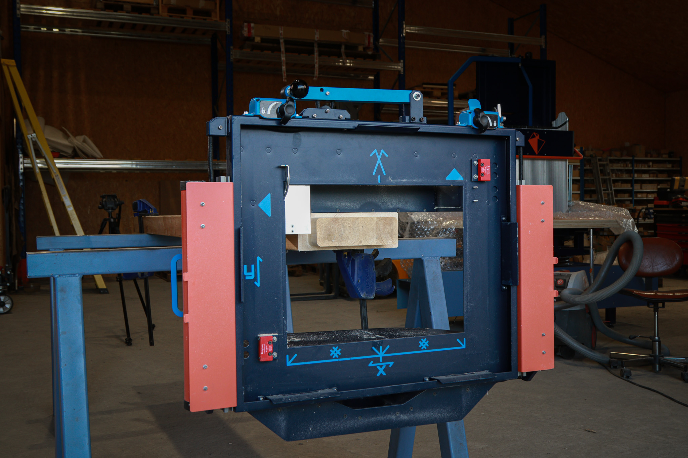

La filière bois traditionnelle face aux défis de la modernisation
par le Staff de Robotech Magazine · Publié le 27 août 2025

Atelier artisanal combinant machines numériques (CNC) et outils traditionnels. Photo d’illustration.
Un secteur artisanal en pleine mutation
L’artisanat du bois repose depuis des siècles sur un savoir-faire transmis de génération en génération. Mais aujourd’hui, les PME du secteur sont confrontées à un défi majeur : entrer dans l’ère numérique pour répondre aux nouvelles attentes du marché. Les clients recherchent désormais des produits personnalisés, fabriqués rapidement et avec une précision irréprochable. Qu’il s’agisse de meubles, de fenêtres ou de charpentes, le sur-mesure devient la norme. Pour suivre cette évolution, les ateliers doivent envisager l’acquisition d’outils numériques, en particulier les machines à commande numérique (CNC), qui transforment en profondeur la production.
Longtemps réservées aux grandes entreprises en raison de leur prix et de leur complexité, les CNC se démocratisent. La baisse des coûts, les aides de l’État, le leasing ou la location rendent ces équipements accessibles aux petites structures. Pour les artisans, le gain est considérable : une productivité accrue, un usinage plus rapide et plus précis, une réduction de la charge physique et donc un meilleur confort de travail.
Ces machines offrent aussi un atout précieux face aux difficultés de recrutement. La menuiserie et la charpente peinent à attirer des jeunes générations qui associent souvent ces métiers à une image vieillissante. Or, la modernisation des ateliers redonne de l’attrait au secteur. Les CNC permettent de reproduire des pièces complexes avec une précision autrefois réservée aux grandes industries, garantissant une qualité constante et maîtrisée, même sur de petites séries. Elles apportent ainsi une réponse à la fois technique et sociale aux défis actuels.
L’innovation numérique au service des artisans : l’exemple de l’OAKBOT
Si les CNC installées en atelier représentent une première étape, une nouvelle génération d’outils hybrides ouvre encore plus de possibilités. Parmi elles, l’OAKBOT, un robot charpentier portatif développé par l’entreprise EPUR dans les Hautes-Pyrénées, constitue une véritable révolution. Conçu pour être transporté facilement grâce à son chariot OAKMOBILE, il permet aux artisans de réaliser directement sur chantier des découpes complexes avec une précision numérique inédite.
Compact et intuitif grâce à une interface tactile, l’OAKBOT allie flexibilité et autonomie. Il améliore la sécurité en réduisant les gestes répétitifs et la manipulation de pièces lourdes, tout en offrant une précision de coupe exceptionnelle. Cet outil illustre parfaitement la manière dont la technologie peut s’adapter aux besoins concrets des PME, en leur donnant accès à une productivité et une qualité autrefois réservées aux grandes entreprises, sans perdre la souplesse du travail artisanal.
Vers une transition numérique à taille humaine
Adopter ces nouvelles technologies ne signifie pas abandonner le savoir-faire. Au contraire, la réussite de la transition dépend largement de la formation. De plus en plus de centres spécialisés intègrent désormais l’apprentissage des machines numériques dans leurs programmes, tout en continuant à valoriser les techniques traditionnelles. L’OAKBOT, par exemple, est devenu un outil pédagogique apprécié, car il combine gestes ancestraux et innovations modernes.
La modernisation passe aussi par une dynamique collective. Les PME peuvent collaborer, partager des équipements coûteux, sous-traiter certaines étapes ou mutualiser leurs compétences. Cette coopération locale renforce le tissu économique et favorise l’innovation.
L’avenir du secteur semble ainsi se dessiner dans des ateliers hybrides, où machines numériques et travail manuel cohabitent harmonieusement. Loin d’effacer la tradition, le numérique agit comme un tremplin qui permet aux artisans de préserver l’identité de leur métier tout en s’adaptant aux exigences du marché. La filière bois pourrait même devenir un modèle pour d’autres secteurs artisanaux, appelés eux aussi à conjuguer héritage et technologie.